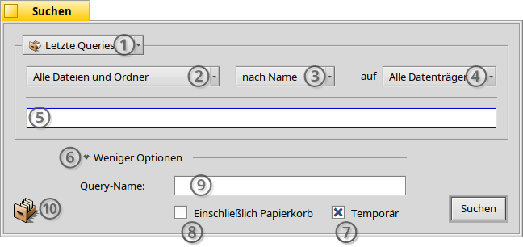
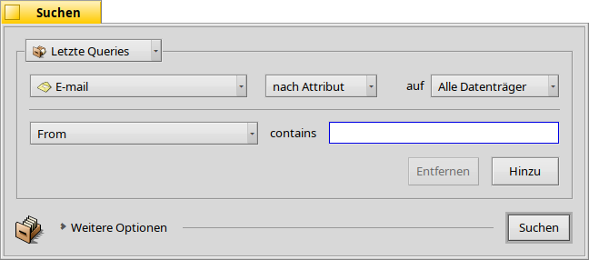
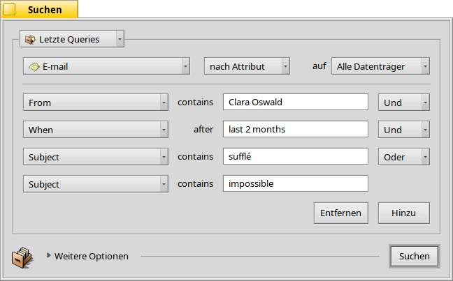
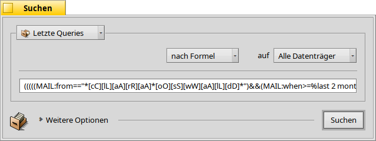
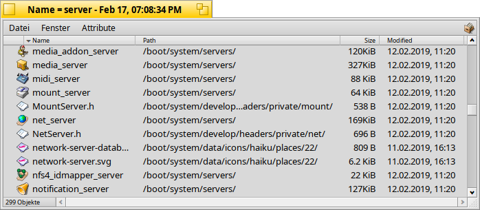

Deutsch
Deutsch Català
Català English
English Español
Español Français
Français Italiano
Italiano Magyar
Magyar Polski
Polski Português
Português Português (Brazil)
Português (Brazil) Română
Română Slovenčina
Slovenčina Suomi
Suomi Svenska
Svenska 中文 ［中文］
中文 ［中文］ Русский
Русский Українська
Українська 日本語
日本語| Index |
|
Das Suchfenster Einfache Suche - "by Name" Erweiterte Suche - "by Attribute" Spezielle Suche - "by Formula" Das Ergebnisfenster Such-Vorlagen |
Queries
Als "Query" bezeichnet man eine Dateisuche anhand ihrer Attribute. Sie kann im Tracker oder Terminal gestartet werden und wird in /boot/home/queries/ abgelegt. Dort gespeicherte Such-Abfragen werden standardmäßig nach sieben Tagen entfernt. Die gespeicherten Such-Abfragen sind jedoch keine statischen Ergebnislisten, sondern vielmehr die dabei verwendete Suchformel, die bei jedem weiteren Aufruf dieser Query für die erneute Suche benutzt wird.
Eine gespeicherte Query muss man aber nicht doppelklicken, um an aktuelle Ergebnisse zu kommen. Mittels Trackernavigation kann man sie wie jeden anderen Ordner über Untermenüs durchforsten.
 Das Suchfenster
Das Suchfenster
Queries werden über das Menü gestartet. Entweder von der Deskbar, einem Tracker-Fenster oder dem Desktop. Das Tastenkürzel ist ALT F. Das Suchfenster sieht folgendermaßen aus:
Hier lassen sich lassen sich kürzlich verwendete oder gespeicherte Queries auswählen und die aktuellen Parameter als Query Vorlage speichern.
Suchen lassen sich von allen Dateien und Ordnern () auf bestimmte Dateitypen einschränken.
- Auswahl der Suchmethode:
- - eine einfache Suche nach Datei- oder Ordnername.
- - eine erweiterte Suche nach bestimmten Zeichen in einem oder mehreren Attributen.
- - ein noch fortgeschrittenere Suche, bei der komplexe Suchformeln sehr fein angepasst werden können.
Auswahl der zu durchsuchenden Datenträger.
Eingabefeld des Suchbegriffs.
Über einen Klick auf das Dreieck werden weitere Optionen aufgerufen.
Wird die Option abgewählt, wird die Query nicht mehr automatisch nach sieben Tagen entfernt.
Wird die Option aktiviert, wird der Papierkorb mit durchsucht.
Optionales Eingabefeld für den Dateinamen der Query, falls diese gespeichert werden soll.
Eine Query lässt sich durch Drag & Drop des Icons speichern. Geschieht dies mit der rechten Maustaste, kann sie auch als "Query-Vorlage" gespeichert werden.
Einfache Suche - "nach Name"
Will man einfach nur alle Dateien und Ordner auf den eingehängten Datenträgern finden, die einem bestimmten Muster entsprechen, belässt man die Suchmethode einfach auf , füllt das Suchfeld entsprechend aus und drückt RETURN.
Erweiterte Suche - "nach Attribut"
Erweiterte Suchen sind durch Queries in den Attributen ausgewählter Dateitypen möglich. Das geht aber nur, wenn diese Attribute indiziert sind.
Als erstes stellt man dazu den Dateityp von auf, zum Beispiel, und die Suchmethode auf .
Daraufhin erscheint links vom Eingabefeld ein Menü und darunter die Buttons und . Aus dem Menü wählt man das zu durchsuchende Attribut. Mittels und können noch weitere Attribute für die Suche verwendet werden, beziehungsweise auch wieder entfernt. Untereinander können die einzelnen Attributsuchen logisch mit AND/OR verknüpft werden.
Als Beispiel, eine Suche nach E-Mails:
So sieht das Suchen-Fenster aus wenn man nach allen E-Mails sucht, die einen Clara Botters in den letzten 2 Monaten geschickt hat und deren Betreff "vibraphone" oder "skepticality" enthielt.
Wie man sieht, versteht die Suche nach zeitbasierten Attributen einige nützliche Begriffe: Neben dem "last 2 months", funktionieren auch "today", "yesterday", "Monday" oder "last Monday" (was Montag letzter Woche entspricht) oder "last 2 minutes/hours/days/weeks".
So lässt sich die Trefferzahl sehr gut einschränken.
Noch fortgeschrittenere Suche - "nach Formel"
Die Formel einer Query von Hand einzugeben is eine wahre Herausforderung und eigentlich ziemlich unpraktisch. Trotzdem ist es manchmal nützlich.
Nehmen wir mal obige Attribute-Query von Claras E-Mails. Hat man erst mal alle Suchbegriffe beisammen, schaltet man um zu und ist prompt überwältigt von diesem einzeiligen Query-Ausdruck:
Hier noch mal als Text und zur besseren Lesbarkeit umgebrochen:
(((((MAIL:from=="*[cC][lL][aA][rR][aA] [bB][oO][tT][tT][eE][rR][sS]*")
&&(MAIL:when>=%2 months%))
&&(MAIL:subject=="*[vV][iI][bB][rR][aA][pP][hH][oO][nN][eE]*"))
||(MAIL:subject=="*[sS][kK][eE][pP][tT][iI][cC][aA][lL][iI][tT][yY]*"))
&&(BEOS:TYPE=="text/x-email"))
Wozu das Ganze?
Die Suchformel lässt sich in eine E-Mail oder Forumbeitrag kopieren oder im IRC erwähnen, damit sie von anderen benutzt oder verbessert werden kann.
Mit dieser Methode lassen sich Queries entspannt im Modus konstruieren. Anschließend wechselt man in den Modus, um die Formel der so erstellten Query im Terminal oder einem Skript zu nutzen.
Eine Query lässt sich so fein anpassen, indem man zusätzliche Klammern setzt, in bestimmten Abschnitten auf Groß- und Kleinschreibung achtet oder einige logische Verknüpfungen verneint durch Ändern von "==" zu "!=" für ein NOT AND. Dazu benötigt man nur ein gewisses Basiswissen über Reguläre Ausdrücke und ein klein wenig Programmier-Kenntnisse.
Das Ergebnisfenster
Hat man die Suche gestartet, wird das Find-Fenster durch ein Ergebnisfenster ersetzt. Hier ein Beispiel einer Suche nach "server":
Außer ihrem grauen Hintergrund, unterscheidet Ergebnisfenster nichts von jedem anderen Tracker-Fenster. Einige Dinge gehören erwähnt:
Durch einen Doppelklick auf das Path Attribut, öffnet sich der Speicherort einer Datei oder eines Ordners.
Mit oder ALT G gelangt man zurück zum Suchen-Fenster, um die Query zu verändern.
Eine Query ist "live". Wenn im System also eine den Suchkriterien entsprechende Datei neu auftaucht oder verschwindet, schlägt sich diese Änderung sofort im Suchergebnis nieder.
Für jeden Dateityp lässt sich für das Ergebnisfenster ein sinnvolles Attribut-Layout festlegen. Dazu öffent man einen Ordner, der Dateien des Dateityps enthält, für den man so eine Layout-Vorlage erstellen möchte. Hier richtet man sich die Ansicht der einzelnen Attributspalten so ein, wie man sie im Ergebnisfenster gern hätte und kopiert das Layout mit .
Jetzt öffnet man /boot/home/config/settings/Tracker/DefaultQueryTemplates, legt einen neuen Ordner mit dem Namen Gruppe/Dateityp an, wobei dabei der Querstrich mit einem Unterstrich ersetzt wird, also zum Beispiel "audio_x-mp3". Diesen neuen Ordner öffnet man anschließend und fügt das vorher kopierte Layout mit ein.
Query-Vorlagen
Beim Doppelklick einer gespeicherten Query erscheint sofort das Ergebnisfenster und die Dateisuche beginnt unverzüglich. Manchmal möchte man aber nicht mit exakt diesen Parametern suchen, sondern sie nur als Ausgangspunkt für eine etwas abgeänderte Formel benutzen.
Mit dem Menüpunkt (siehe (1) im Bild weiter oben) oder durch Herausziehen des Icons (10) mit der rechten Maustaste lässt sich genau das erreichen. Ein Doppelklick darauf öffnet nicht gleich das Ergebnisfenster, sondern das Suchen-Fenster, in dem man schnell einen Suchbegriff anpassen oder Attribute hinzufügen oder entfernen kann.
Egal wo Query-Vorlagen gespeichert wurden, sie erscheinen im Menü mit den kürzlich durchgeführten Queries im Suchen-Fenster.